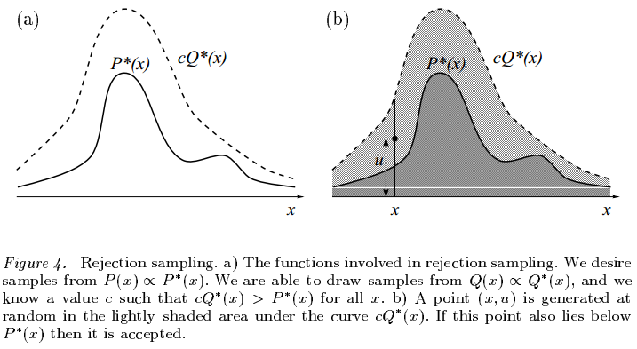
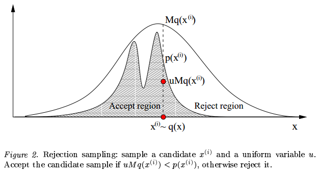
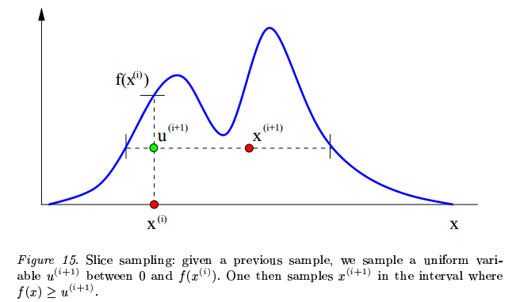

Purpose
采样(Sampling)是统计学底下一个比较热门的分支，采样的目的主要有两个：
- 生成服从某个概率分布$P(x)$ 的样本${x^{(r)}}^R_{r=1}$
- 估计某个分布$P(x)$ 的期望
其中概率分布$P(x)$ 被称为目标密度(target density)，我们假设我们已知分布的概率密度，记为
$$
P(x)=\frac{P^(x)}{Z}
$$
即概率密度函数除以一个归一化常数。有些人会问，既然我们有$P^(x)$ ，为什么不能解决采样的问题？这其中存在两个困难，首先是我们并不知道其中的归一化常数
$$
Z=\int P^*(x)d^Nx
$$
其次即使我们知道常数$Z$ ，从$P(x)$ 中采样得到样本仍然困难，特别是在高维空间中。
Bayesian Sampling
Inverse CDF Sampling
逆累计概率密度(Inverse CDF)是利用cdf来生成样本，生成一个均匀分布的随机数$u\sim U(0,1)$ ，然后根据概率分布的cdf查找对应的采样值，是最简单的采样方法之一，但我们需要计算概率分布cdf的反函数。
Importance Sampling
重要性采样(Importance Sampling)重点是为了解决估计期望的问题。假设$Q(x)$ 是一个容易采样的已知分布，对于期望的估计我们有
$$
E(X)=\int xp(x)dx=\int x\frac{p(x)}{q(x)}q(x)dx=\int xw(x)q(x)dx
$$
其中$w(x)=\frac{p(x)}{q(x)}$ ，对于分布$P(x)$ 的期望我们通常可以这样计算
$$
\hat{E}(X)=\frac{1}{n}\sum_i^n x_i, x\sim P(x)
$$
当我们加入分布$Q(x)$ 时，期望就变成
$$
\hat{E}(X)=\frac{1}{n}\sum^n_ix_i*w(x_i),x_i\sim Q(x)
$$
所以，对于易于采样的分布$Q(x)$ 中采出$x$ ，对$x$ 进行加权$w(x)$ 然后计算期望的估计。
Rejection Sampling
拒绝采样(Rejection Sampling)主要是为了解决第一个问题。我们假设我们找到了一个常数$c$ 和一个易于计算的提案分布$Q(x)$ (proposal distribution)，使得
$$
\forall x,cQ^(x)>P^(x)
$$
即如下图所示

需要采样的时候，我们做两步：
- 在定义域上做均匀分布$x\sim U(-\infty,+\infty)$ ；
- 做接受概率$u\sim U(0,cq(x))$ ；
- 如果$u<\frac{p(x)}{cq(x)}$ ，则接受这个采样的样本$x$ ，反之则拒绝。
但拒绝采样也会有些许问题，如下图所示，首先我们并不知道常数$c$ 使得提案分布恒大于目标分布，如果$c$ 取得小了，则达不到采样的目的，$c$ 取得大了，采样的效率就会比较低，采样大部分时候都会被拒绝。同时，对于提案分布，当提案分布与目标分布不相似时，采样的效率同样很低。

MCMC
马尔科夫链的蒙特卡洛方法(Markov chain Monte Carlo, MCMC)是一种基于马尔科夫链的蒙特卡洛方法，此篇就不讲解马尔科夫链的相关内容了，MCMC采样的主要思想就是利用马尔科夫的平稳分布来模拟目标分布，随机生成的初始分布并不重要，经过长时间的状态转移之后，初始分布慢慢变成平稳分布，也就是我们的目标分布，而难点就在于怎么构造马尔柯夫的状态转移矩阵。
Metropolis Hastings
Metropolis-Hastings算法的重点在于细致平稳条件的构造
$$
\pi(x)P(x’|x)=\pi(x’)P(x|x’)
$$
状态$\pi(x)$ 转换到$\pi(x’)$ 的概率和$\pi(x’)$ 转换到$\pi(x)$ 的概率是相同的，在采样的问题中，也就是采样出$x_i$ 再采出$x_j$ 的概率和采样出$x_j$ 再采出$x_i$ 的概率相同，可是一般情况下，概率分布会满足细致平稳条件(detailed balance condition)
$$
p(x_i)q(x_i,x_j)\neq p(x_j)p(x_j,x_i)
$$
所以我们引入一个函数$\alpha(x,y)$ 使得
$$
p(x_i)q(x_i,x_j)\alpha(x_i,x_j)=p(x_j)p(x_j,x_i)\alpha(x_j,x_i)
$$
那么问题来了，这个$\alpha(x,y)$ 该怎么取？最简单，取对称的函数，即
$$
\alpha(x,y)=p(y)q(y,x)
$$
所以我们令
$$
Q’(x_i,x_j)=q(x_i,x_j)\alpha(x_i,x_j)
$$
所以以$Q’(x,y)$ 为转移矩阵，则目标分布$P(x)$ 就是平稳分布。所以我们做均匀分布的随机数$u\sim U(0,1)$ ，当$u<\alpha(x_i,x_j)=p(x_j)q(x_i|x_j)$ ，接收转移，将$x_j$ 作为采到的样本，重复此步骤，一段时间后，采到的样本就是服从平稳分布的，也就是服从我们的目标分布。
同时，如果$\alpha(x_i,x_j)$ 过小，则不容易产生新的样本，我们给等号两边同时扩大一定倍数，这样不改变细致平稳条件，也会提高转化概率，所以我们取
$$
\alpha(x_i,x_j)=\min{\frac{p(x_j)q(x_j,x_i)}{p(x_i)q(x_i,x_j)},1}
$$
注意在不断迭代后，我们只取后部分的样本作为采样得到的样本，因为前面的样本有可能还没有收敛到稳态分布，所以只取后面的样本。
Gibbs Sampling
吉布斯采样(Gibbs Sampling)是Metropolis Hastings的一种变种，当接受概率恒为$1$ 的时候，同时改用采样于条件分布，Metropolis Hastings就变成了Gibbs Sampling，但适用于多维的分布。对于一组数${x_1,…,x_n}$ 进行以下迭代
$$
x_1^{t+1}\sim P(x|x_2^t,…,x_n^t)
$$
$$
x_2^{t+1}\sim P(x|x_1^{t+1},x_3^t,…,x_n^t)
$$
$$
…
$$
$$
x_n^{t+1}\sim P(x|x_1^{t+1},…,x_{n-1}^{t+1})
$$
如此更迭多次之后，得到的样本就是从我们的目标分布中采样得到的分布。
Slice Sampling
切片采样(Slice Sampling)也是一种比较简单的MCMC方法之一，如下图所示

取均匀分布随机数$x_i$ ，再做均匀分布随机数$u\sim U(0,f(x_i))$ ，然后再取$x_{i+1}$ ，如此不断迭代，则可以采样出所需分布的样本。Slice Sampling虽然简单，但是会陷入局部，即某个高峰点，然后难以继续采出下一个点。
Summary
总结了一下常见的采样方法，采样广泛用于图模型和贝叶斯方法，虽然现在传统的统计学习方法和贝叶斯方法现在不如深度学习热门，但这些方法的思想，却值得我们了解，博而广，方才能专而精。